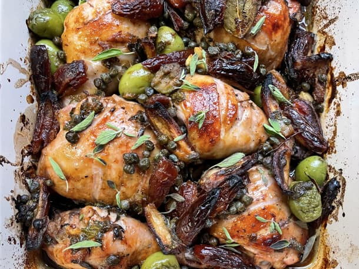

Ottolenghi Marbella Chicken

Description
In this twist on the timeless recipe from Julee Rosso and Sheila Lukins’s The Silver Palate cookbook,
prunes are replaced with dates while date molasses lends a touch of sweetness.
Ingredients
- 8 whole chicken legs (about 3 pounds total), skin scored a few times
- 5 cloves garlic, minced
- 3/4 cup fresh oregano leaves, plus extra to serve or 2 teaspoons dired oregano
- 3 tablespoons red wine vinegar
- 3 tablespoons olive oil
- 1 cup pitted green olives
- 6 tablespoons capers, plus 2 tablespoons caper brine
- 200g dried Medjool dates, pitted and quartered lengthwise
- 2 bay leaves
- Salt and black pepper
- 1/2 cup dry white wine
- 1 tablespoon date molasses (or standard molasses)
Steps
- Place the chicken in a large nonreactive bowl and add the garlic, oregano, vinegar, oil, olives, capers, caper
brine, dates, and bay leaves, along with 1 teaspoon salt and a good grind of black pepper. Gently mix everything
together, cover the bowl, and leave in the fridge to marinate for 1 to 2 days, stirring the ingredients a few
times during the process.
- Preheat the oven to 400°F.
- Spread out the chicken legs on a medium high-sided baking pan, along with all the marinade ingredients. Whisk
together the wine and molasses and pour over the meat. Place in the oven and cook for 50 minutes, basting two or
three times, until the meat is golden brown on top and cooked through.
- Remove from the oven, transfer everything to a large platter, sprinkle with some oregano, and serve.
Recipe Notes
Sourced from kitchn.com
Home